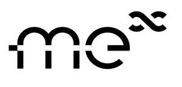

Trade Mark Journal No.2025/042 17 October 2025
UK00004272275 1 October 2025 (7,9,10,12,35)

- Class 7
- Industrial robots, robotic mechanisms [machines] for lifting; loading-unloading machines and apparatus; lifting apparatus; Robots, motors and engines for driving wheelchairs, prostheses, orthoses and artificial exoskeletons.
- Class 9
- Electronic machinery and equipment and their parts; computer programs with artificial intelligence functions; computer software that simulates conversations through chatbots (artificial intelligence); application software; computer software and computer hardware; computer programs (downloadable software); computer program used to operate an electronic computer; data processing apparatus and computers; computer peripheral apparatus; computer programs with communication functions such as e-mail and chat; user-programmable humanoid robots, not configured; humanoid robots with artificial intelligence for use in scientific research; teaching robots; humanoid robots having communication and learning functions for assisting and entertaining people; laboratory robots; telepresence robots; security surveillance robots; humanoid robots with artificial intelligence for use in household cleaning and laundry.
- Class 10
- Medical apparatus and instruments; sphygmomanometers; electrocardiographs; body fat monitors; surgical apparatus and instruments; therapeutic apparatus and instruments; heart pacemakers; massage apparatus for medical purposes; wheeled stretchers; knee supports for medical purposes; ankle supports for medical purposes, artificial limbs; trusses; elastic stockings for medical purposes; traction apparatus for medical purposes; physical exercise apparatus for medical purposes; electric belts for medical purposes; belts for medical purposes; hospital gurneys; medical instruments for monitoring a subject during walking process; medical instruments for gait and motion analysis; treadmills for medical purposes for use in walking and gait training; medical rehabilitation apparatus for walking balance training; medical rehabilitation apparatus for walking training; medical rehabilitation apparatus for lower limbs exercise training; Wearable assistive robotic devices for medical purposes; Robotic exoskeleton suits for medical purposes; Robotic exoskeleton devices for medical and therapeutic devices; Exoskeleton devices for physiotherapy; walking aids; disability walking aids; mobility walking aids; Walking sticks with integrated electronic sensors and artificial intelligence for assisting visually impaired persons; walking sticks and walking canes incorporating sensors.
- Class 12
- Automobiles and structural parts thereof; two-wheeled motorized vehicles and structural parts thereof; electric tricycles; autonomous vehicles; self-driving vehicles; assisted-driving vehicles; robot assisted vehicles; Vehicles for amputees, individuals with physical disabilities or special needs or individuals with reduced mobility; wheelchairs; robotic transport vehicles; wheelchair motors for driving wheelchairs; power-operated lifts specially adapted for vehicles for use with personal mobility vehicles; robotic wheelchairs and structural parts therefor; accessory attachments for robotic wheelchairs, namely, arm supports, head supports, thigh supports, and multiple-pocketed carriers for personal items specially adapted for attachment to wheelchairs; self-driving robots for delivery.
- Class 35
- Wholesale services in relation to medical apparatus; retail services or wholesale services for automobiles; retail services or wholesale services for two-wheeled motor vehicles; retails services or wholesale services for electric tricycles.
TOYOTA JIDOSHA KABUSHIKI KAISHA (also trading as TOYOTA MOTOR CORPORATION)
Representative: J A Kemp LLP